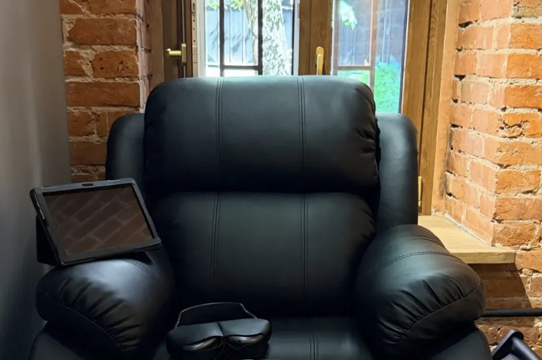
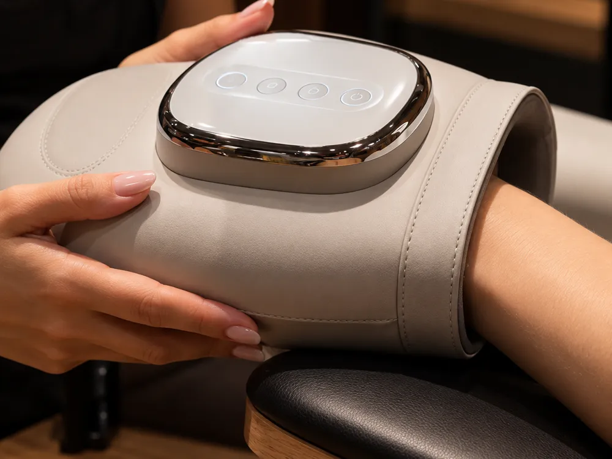
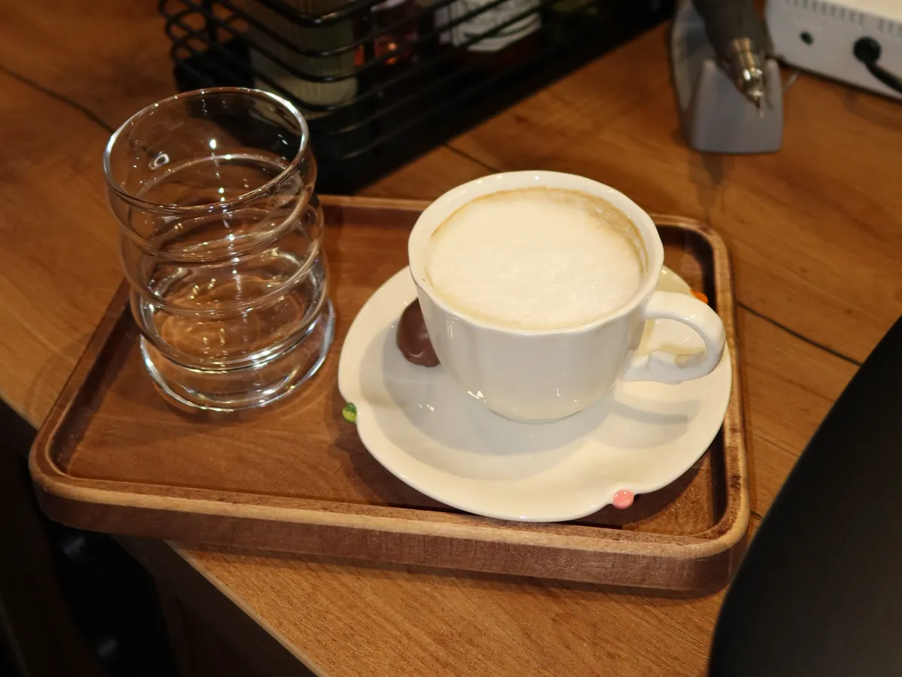
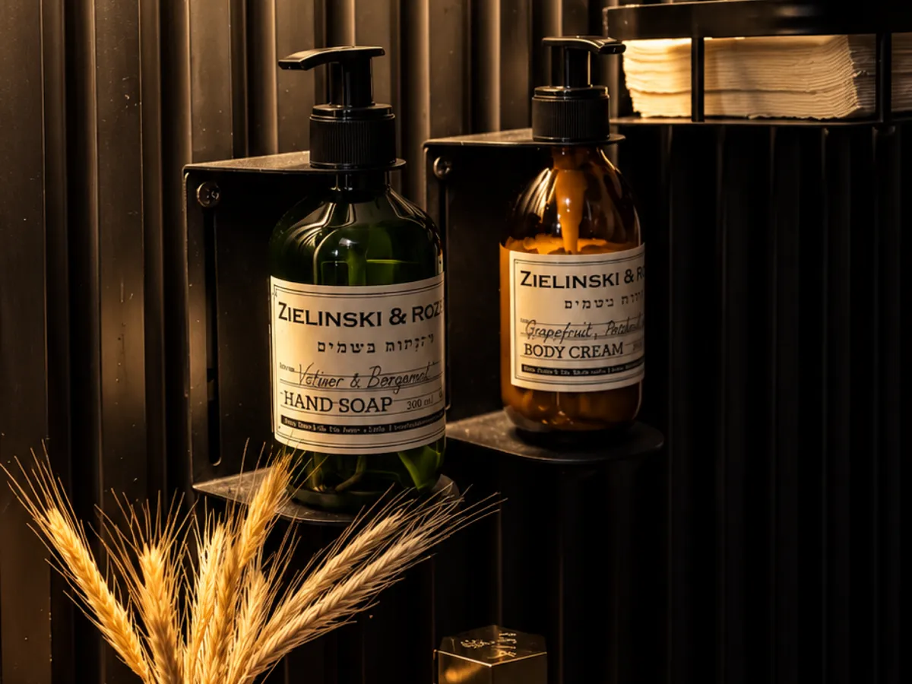
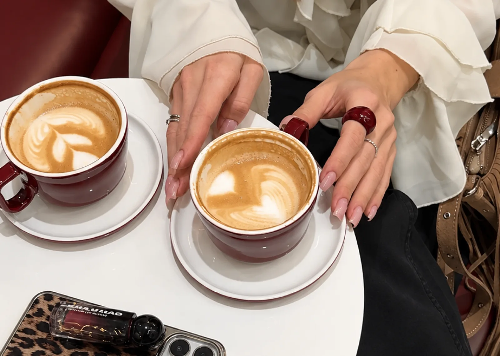
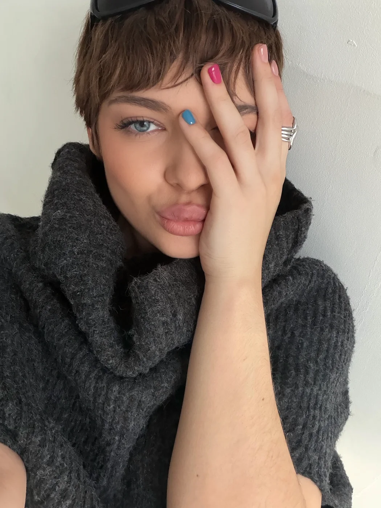
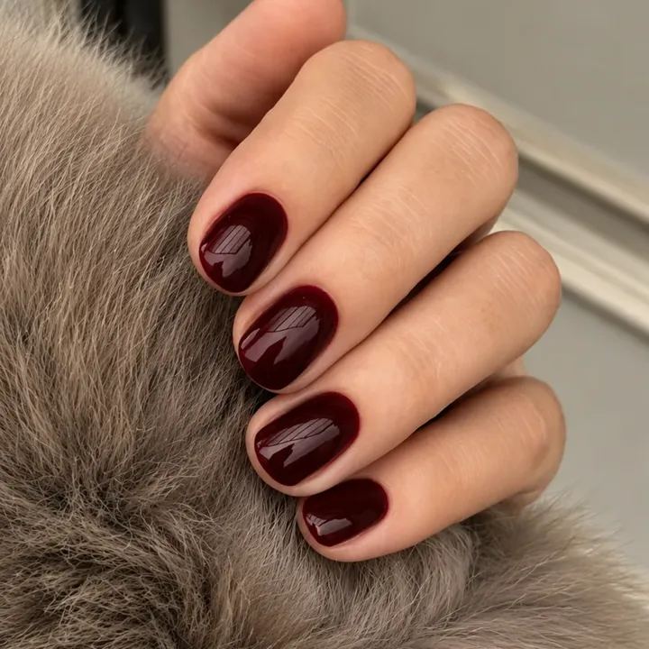

Анастасия
Чистый маникюр и покрытие под кутикулу — тонко и аккуратно.
Записаться к Анастасии
Мы любим маникюр, который выглядит естественно. Поэтому кутикулу обрабатываем бережно, покрытие кладём тонко и близко к ней, а оттенок помогаем выбрать из большой палитры Luxio.

У каждого кресла свой планшет с наушниками: включите фильм или сериал, пока мастер работает.

В конце процедуры предложим расслабить руки в массажёре. Бесплатно — гости пишут, что видят такое впервые.

Кофе на обычном или растительном молоке, гречишный чай, клубничный улун, матча, какао на банановом и мороженое.

Питательный уход входит почти во все виды маникюра и педикюра — доплачивать за него не нужно.
Ваши будущие бэсти — знакомьтесь заранее.
Чистый маникюр и покрытие под кутикулу — тонко и аккуратно.
Записаться к Анастасии
Эстетический и японский маникюр. Работает только с короткой длиной.
Записаться к Наташе
Архитектура ногтя: наращивание и укрепление гелем, подбор длины и формы.
Записаться к Адель
Быстро и аккуратно — когда хочется красивый результат и сэкономить время.
Записаться к КатеБережное покрытие гель-лаком и укрепление гелем на каждый день.
Записаться к Мари

1 этаж · 3 минуты от метро «Трубная», рядом «Золотое Яблоко» и рестораны

Подарок на первый визит
−15%
на сэт-комплекс Luxio: снятие гель-лака, маникюр, выравнивание и покрытие Luxio
2 890 ₽ вместо 3 400 ₽